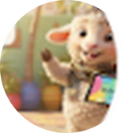

Xar bi {{slotText}} lekk xob wi
« Le mouton mange la feuille »
Le sujet, xar bi, est à la 3ᵉ personne du singulier (il / elle).
mungiy = mungi + -y : une action en train de se faire, pour il / elle.
ContinuerXar bi est à la 3ᵉ personne : on utilise mungiy (mungi + -y) pour une action en cours.